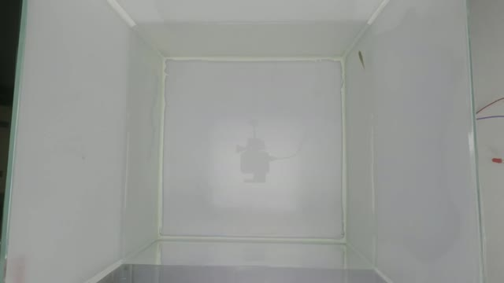
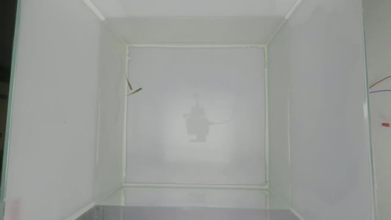
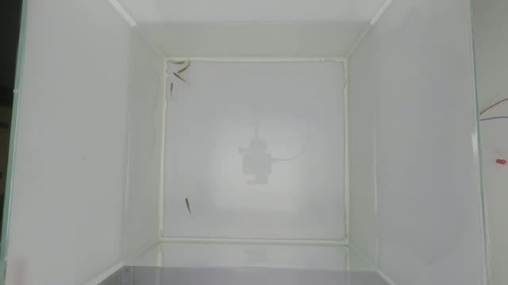
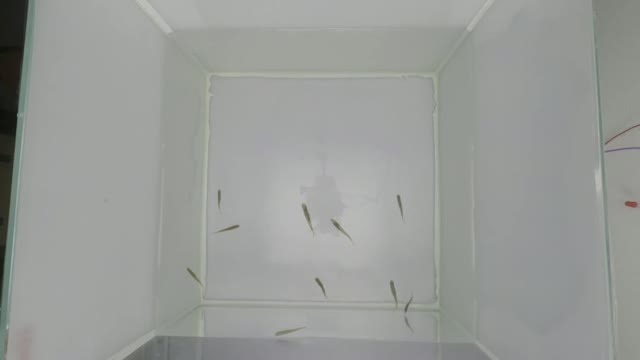
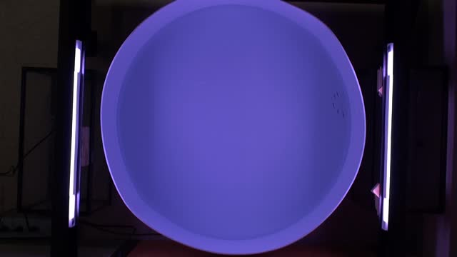
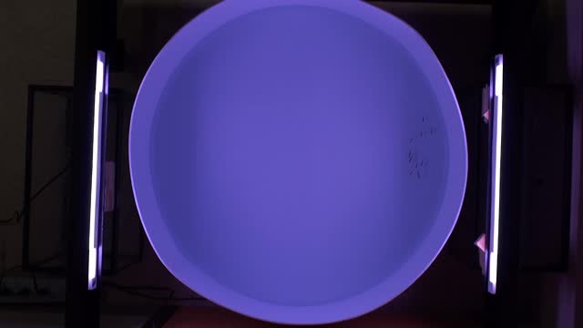
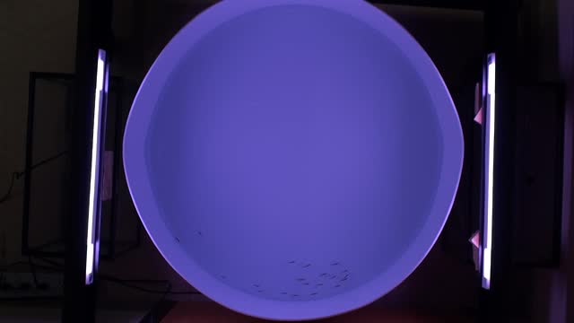
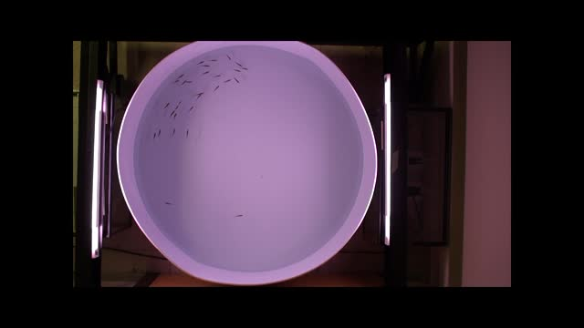
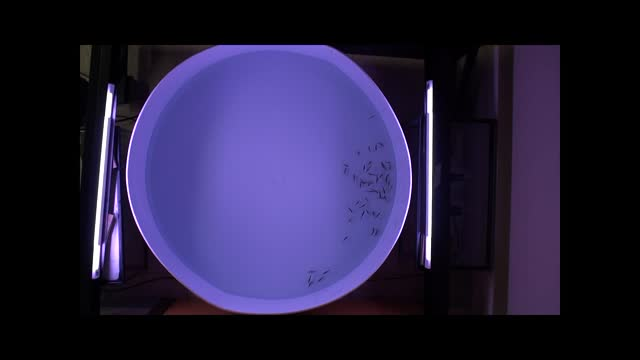

Glass aquarium · overhead view
1 zebrafish
Set known fish count to 1. Crop the usable tank area and check wall reflections in Results.
3D-ZeF · ZebraFish-05. Overhead half extracted and re-encoded to H.264. Source & license ↗
Real camera recordings in glass aquariums and round tanks.
Downloads checked October 28, 2026. Thumbnails are actual frames at 2 seconds. MP4 copies use H.264 for browser playback.
The new clips below show a glass aquarium with straight walls and a roughly square floor. Each download contains only the overhead camera view, so each fish appears once. Start with 1 or 2 fish, crop the usable tank interior, and check reflections near the walls.
The source combines front and overhead views. Our copies extract the right half at its existing 1352 × 760 resolution and retain the original frame rate and duration. Original files are linked on each card.
Pedersen, Haurum, Bengtson & Moeslund (2020), 3D-ZeF. Published by MOTChallenge under CC BY-NC-SA 3.0: attribution, noncommercial use, and share-alike. Cropped MP4s and thumbnails here retain that license.

Set known fish count to 1. Crop the usable tank area and check wall reflections in Results.
3D-ZeF · ZebraFish-05. Overhead half extracted and re-encoded to H.264. Source & license ↗

Set known fish count to 2. Crop the usable tank area and check wall reflections in Results.
3D-ZeF · ZebraFish-06. Overhead half extracted and re-encoded to H.264. Source & license ↗

Set known fish count to 5. Crop the usable tank area and check wall reflections in Results.
3D-ZeF · ZebraFish-07. Overhead half extracted and re-encoded to H.264. Source & license ↗

Set known fish count to 10. Crop the usable tank area and check wall reflections in Results.
3D-ZeF · ZebraFish-08. Overhead half extracted and re-encoded to H.264. Source & license ↗
Additional footage from Miller & Gerlai (2012). These are the previous circular-tank examples.

Set known fish count to 5. A small group for initial detection checks.
Miller & Gerlai (2012), Video S6. From Schooling to Shoaling: Patterns of Collective Motion in Zebrafish (Danio rerio). CC BY 3.0. MP4 and thumbnail converted from the original.

Set known fish count to 10. A larger group for checking overlaps and missed detections.
Miller & Gerlai (2012), Video S7. From Schooling to Shoaling: Patterns of Collective Motion in Zebrafish (Danio rerio). CC BY 3.0. MP4 and thumbnail converted from the original.

Set known fish count to 20. A larger group for checking overlaps and missed detections.
Miller & Gerlai (2012), Video S8. From Schooling to Shoaling: Patterns of Collective Motion in Zebrafish (Danio rerio). CC BY 3.0. MP4 and thumbnail converted from the original.

Set known fish count to 30. A larger group for checking overlaps and missed detections.
Miller & Gerlai (2012), Video S9. From Schooling to Shoaling: Patterns of Collective Motion in Zebrafish (Danio rerio). CC BY 3.0. MP4 and thumbnail converted from the original.

Set known fish count to 50. A larger group for checking overlaps and missed detections.
Miller & Gerlai (2012), Video S10. From Schooling to Shoaling: Patterns of Collective Motion in Zebrafish (Danio rerio). CC BY 3.0. MP4 and thumbnail converted from the original.